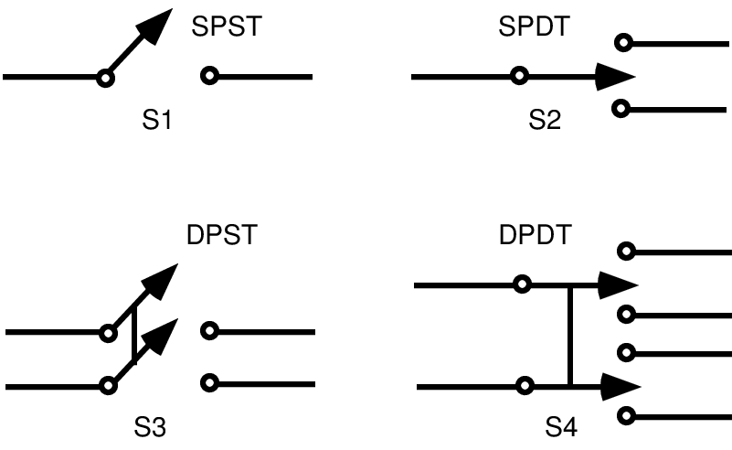
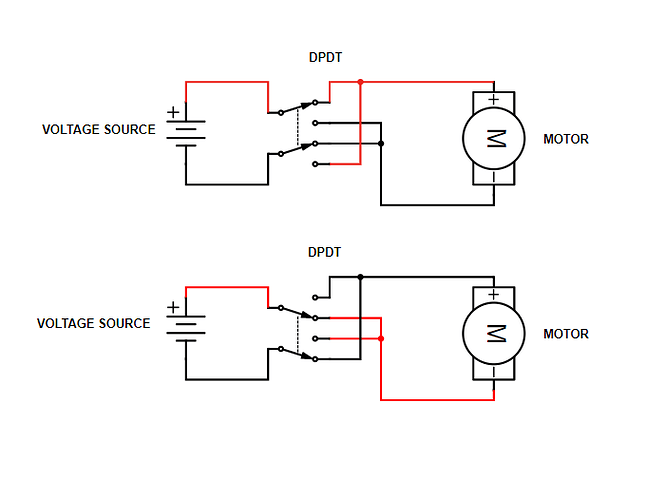
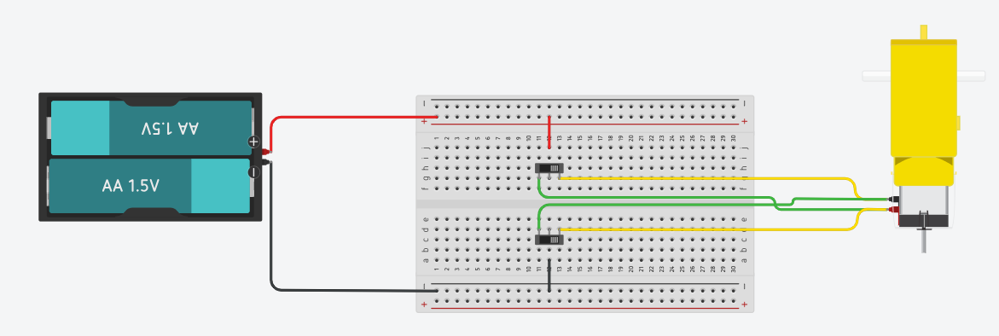
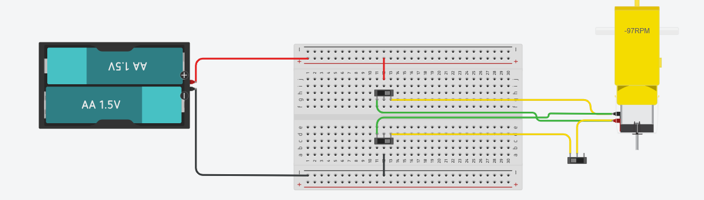

Course: Unit 7 Electrical Systems · Robotics / Engineering (Grades 9–12)
Topics: SPST · SPDT · DPST · DPDT · Momentary vs. Maintained · Reversing a DC Motor · Limit Switches
Learning Objectives:
Name a switch by its poles and throws, and count its terminals.
Read the schematic symbols for SPST, SPDT, DPST, and DPDT switches.
Explain how a DPDT switch reverses a DC motor.
Simulate a motor-reversing circuit and a "useless box" with a limit switch in Tinkercad.
What Does a Switch Do?
A switch is a mechanical part that opens or closes a path for current, or picks which path current takes.
Closed = ON
Contacts touch. A complete loop lets current flow, so the load runs.
Open = OFF
Contacts are apart. The air gap breaks the loop, so no current flows.
Two words that name every switch:
Pole: how many separate circuits the switch controls at the same time. Each pole has its own common terminal.
Throw: how many positions each pole can connect its common to.
Think of a pole as a railroad track and a throw as the number of tracks the switch can send the train down.
The Four Basic Switch Types

Name
Means
Terminals
Typical use
SPST
Single Pole, Single Throw
2
Simple on/off: a light switch
SPDT
Single Pole, Double Throw
3
Pick path A or path B
DPST
Double Pole, Single Throw
4
Turn two circuits on/off together
DPDT
Double Pole, Double Throw
6
Reverse a motor
The dashed or solid bar between the two poles (S3, S4) means they are mechanically linked. One lever moves both.
Counting Terminals
Terminals = Poles × (Throws + 1)
Each pole has one common plus one terminal per throw.
SPDT: 1 × (2 + 1) = 3 → common in the middle, one throw on each side
DPDT: 2 × (2 + 1) = 6 → two rows of three
🔍 Find the common with a multimeter
Set the DMM to continuity (the beeper).
Put one probe on the middle terminal. Touch the other probe to each outside terminal.
Flip the switch and repeat. The common beeps with a different outside terminal in each position.
Don't assume the middle pin is common on every switch. Test it.
Switch Styles You'll See in the Shop
Toggle
Lever flips and stays put. Common in SPDT and DPDT. This is the switch in a useless box.
Slide
Small, cheap SPDT. The Tinkercad slide switch is one of these: middle pin is common.
Rocker
Power switches on tools and power strips. Often lit, often rated for 120 V AC.
Pushbutton
Usually momentary. NO closes only while pressed; NC opens only while pressed.
Limit / Micro switch
A lever pressed by a moving part. Has COM, NO, and NC terminals. Used for robot end stops.
Reed
Glass tube with contacts that close near a magnet. Door sensors and pneumatic cylinder sensors.
Maintained (latching): stays where you leave it. Toggle, slide, rocker.
Momentary: springs back when you let go. Pushbutton, limit switch.
Ratings matter: every switch has a maximum voltage and current, and DC ratings are usually lower than AC ratings. A motor's startup current can be several times its running current.
Reversing a DC Motor with a DPDT

A DC motor spins one way or the other depending on which terminal gets +.
The battery connects to the two commons.
The outside terminals are cross-wired to the motor.
Top: + (red) reaches the motor's + terminal.
Bottom: flip the switch and the cross-wires send + to the motor's − terminal. The motor reverses.
Trace the red path in each picture with your finger.
The H-bridge motor driver from L7.6 does the same job with transistors, so a robot's code can flip the direction instead of your hand.
Tinkercad Build 1: Two Slide Switches as a DPDT

Tinkercad has no DPDT toggle, so we use two SPDT slide switches, one for each pole.
Battery + to the top + rail and − to the bottom − rail.
Top switch: middle pin (common) to +. Bottom switch: middle pin to −.
Top-left and bottom-right pins go to one motor terminal. Top-right and bottom-left go to the other. That's the cross-wire.
Start the simulation. Slide both switches together and watch the RPM change sign.
⚠ Always move both sliders together. The two switches aren't linked, so if only one is flipped, + and − land on the same motor terminal. That's a dead short across the battery. A real DPDT links the poles so this can't happen.
The "Useless Box"
Flip the switch ON, a finger pops out and flips it OFF, and the finger hides again. It's useless, but it shows exactly how a DPDT + limit switch control a motor.
You flip the toggle. The DPDT sends current one way and the motor swings the arm out.
The arm pushes the toggle back. The DPDT reverses the current and the motor pulls the arm home.
The arm hits the limit switch. The limit switch opens the circuit and the motor stops.
Why doesn't the limit switch stop the arm from going out?
It's wired into one throw wire, not a common. That wire only carries current when the toggle is in the "go home" position. The "go out" path doesn't pass through the limit switch at all.
Tinkercad Build 2: Add the Limit Switch

Add a third slide switch off the breadboard. It plays the limit switch.
Cut one throw wire (a wire from an outside pin to the motor) and route it through the limit switch. Use the middle pin and one outside pin.
Run the simulation in both directions. In one direction the limit switch does nothing; in the other it stops the motor.
Label that stopping direction "HOME" on your screenshot.
Stretch: Why would putting the limit switch in the battery's + wire break the useless box?
Quick Check (1 of 2)
1. How many terminals does a DPDT switch have?
4
8
6
3
2. In a switch's name, what does the number of throws tell you?
How many separate circuits the switch controls at once.
How many positions each pole can connect its common to.
How much current the contacts can carry before damage.
How many times it can be flipped before it wears out.
3. A momentary pushbutton is labeled NO. What does that mean?
The circuit is closed until you press it and opens while held.
The circuit stays closed after one press until pressed again.
The button isn't rated for the circuit's operating voltage.
The circuit is open until you press it and closes while held.
Quick Check (2 of 2)
4. Why does flipping the DPDT make the motor run backward?
The switch adds a second battery that pushes current backward.
The cross-wires swap which motor terminal gets + and which gets −.
The second pole slows the motor until it stops and turns back.
The switch changes the battery's DC into AC for the motor.
5. In Build 1, what happens if you flip only one of the two slide switches?
The motor spins at half speed because only one pole is powered.
The motor keeps spinning the same way until both are flipped.
+ and − land on the same motor terminal and short the battery.
The slide switch locks in place until the other one is moved.
6. Why is the useless box's limit switch wired into a throw wire instead of a common?
So it carries less current and lasts longer than the main toggle.
So the motor gets full battery voltage while the arm is moving.
So it stops only the return direction, not the push-out direction.
So the toggle and the limit switch can use the same part number.
Done Checklist
I can name SPST, SPDT, DPST, and DPDT and count their terminals.
I can trace the current path through the DPDT motor-reversing schematic in both positions.
Build 1: my motor runs both directions in Tinkercad (screenshot showing + RPM and − RPM).
Build 2: my limit switch stops the motor in the HOME direction only (screenshot, HOME labeled).
I answered the stretch question: why the limit switch can't go in the battery's + wire.
🔧 Next: the real thing
On the bench, a real DPDT toggle replaces the two slide switches. Use your multimeter's continuity mode to find the commons before you solder or connect anything.